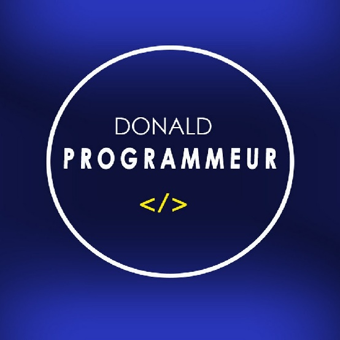

Accueil
Accueil Médias sociaux
Médias sociaux Streaming VF et VOSTFR
Streaming VF et VOSTFR Apprendre
Apprendre IA
IA Éditer
Éditer Développer
Développer E-Services
E-Services Explorer le monde
Explorer le monde Télécharger
Télécharger Mobiles et Pc
Mobiles et Pc Découvrir plus
Découvrir plus Gmail
Gmail Facebook
Facebook Tiktok
Tiktok Instagram
Instagram X
X GitHub
GitHubBienvenue dans la section Développer
Bienvenue, chers développeurs ! J'ai spécialement créé cette section rien que pour vous, car c'est grâce à votre passion et votre expertise que notre monde numérique est aussi riche et innovant. Ici, vous trouverez une sélection des meilleures plateformes, conçues pour vous aider à perfectionner vos compétences, explorer de nouveaux outils, et trouver des ressources adaptées à tous les niveaux, du débutant au professionnel. Chaque visite vous offrira de nouvelles découvertes, car vous êtes au cœur de ce voyage. Revenez souvent pour continuer à explorer, apprendre et grandir avec nous. Votre contribution est inestimable, et ce site est votre espace pour briller encore plus !
Alors, que cherchez-vous ?
Je cherche :
Les sites pour apprendre à coder
W3Schools
W3Schools est un site web offrant des tutoriels et des références gratuites sur le développement web, incluant HTML, CSS, JavaScript, et autres technologies.
 Tutorialspoint
Tutorialspoint
Tutorialspoint est un site web proposant des tutoriels gratuits et des cours sur divers langages de programmation, technologies et outils de développement.
 Freecodecamp
Freecodecamp
FreeCodeCamp est une plateforme éducative en ligne gratuite offrant des cours, des projets pratiques, et des certifications gratuites en développement web et en programmation.
Les plateformes pour développeurs
 Github
Github
GitHub est une plateforme de gestion de versions et de collaboration pour le développement logiciel, permettant de stocker, partager et gérer du code source.
Stackoverflow
Stack Overflow est un site de questions-réponses pour les développeurs, permettant de poser des questions et d'obtenir des réponses sur des problèmes de programmation.
 Replit
Replit
Replit est une plateforme en ligne qui permet de coder, collaborer et héberger des projets dans plusieurs langages de programmation. Elle est idéale pour le développement, l'apprentissage, et l'exécution de code directement dans le navigateur.
Les sites pour outils de développement
MDN
MDN Web Docs est une ressource gratuite offrant des documentations détaillées et des tutoriels sur les technologies web comme HTML, CSS et JavaScript.
 Devdocs
Devdocs
DevDocs est un site de documentation pour les développeurs, offrant un accès rapide et intégré à des références techniques pour divers langages et frameworks.
 W3C
W3C
W3C est une organisation qui élabore des standards et des recommandations pour le web, visant à garantir l'interopérabilité et l'accessibilité des technologies web.
 W3C Validator
W3C Validator
W3C Validator est un outil en ligne qui vérifie la conformité des pages web aux standards du W3C pour HTML, XHTML et CSS.
 HTML Cheatsheet
HTML Cheatsheet
HTML Cheatsheet est un site fournissant des références rapides et des exemples de balises HTML et d'attributs pour faciliter la création de pages web.
SVG Repo
SVGRepo est une bibliothèque en ligne qui offre des millions d'icônes et illustrations SVG gratuites pour les projets de design et développement.
 Convertio
Convertio
Convertio est un outil en ligne gratuit qui permet de convertir divers formats de fichiers, incluant documents, images, vidéos et plus, directement depuis le navigateur.
 WebUtility
WebUtility
WebUtility est un site gratuit offrant des outils en ligne pour convertir, compresser, et optimiser divers types de fichiers, ainsi que générer des codes et analyser des données.
 Lunapic
Lunapic
Lunapic est un éditeur d'images gratuit en ligne qui permet de retoucher, dessiner, et appliquer des effets sur des photos.
 Webskills
Webskills
Le projet WebSkills de GitHub, géré par andreasbm, est une ressource éducative qui répertorie des compétences et technologies essentielles pour le développement web. Il propose des listes de vérification et des parcours d'apprentissage pour aider les développeurs à acquérir des compétences variées, allant du front-end au back-end, avec des liens vers des tutoriels et des outils gratuits.
Zealdocs
Zealdocs est un logiciel de documentation hors ligne qui offre un accès à des documentations complètes sur divers langages de programmation comme HTML, CSS, JavaScript, Python, Java, ainsi que de nombreux frameworks. Il permet aux utilisateurs de consulter, rechercher et naviguer dans les ressources sans connexion Internet, facilitant l'apprentissage et le développement.
 Visual Studio Code
Visual Studio Code
Visual Studio Code est un éditeur de code source léger et puissant, développé par Microsoft. Il prend en charge de nombreux langages de programmation, offre une intégration de Git, des extensions variées, et un débogage intégré. Il est hautement personnalisable, permettant aux développeurs d'améliorer leur flux de travail avec des thèmes et des fonctionnalités adaptées à leurs besoins.
Acode
Acode est un éditeur de code léger pour Android, conçu pour le développement web. Il prend en charge plusieurs langages de programmation, offre des fonctionnalités comme la coloration syntaxique, l'autocomplétion, et la prévisualisation en temps réel. Acode permet également de travailler hors ligne, facilitant ainsi le codage sur mobile.
 Termux
Termux
Termux est une application Android qui fournit un environnement de terminal Linux. Elle permet d'exécuter des commandes, d'installer des paquets via un gestionnaire de paquets, et de développer des scripts en plusieurs langages. Termux offre une interface en ligne de commande pour une utilisation avancée et le développement sur mobile.
 KSWeb
KSWeb
KSWeb est une application Android qui transforme votre appareil en serveur web local, permettant d’héberger des sites avec PHP, MySQL et un serveur HTTP.
 Userland
Userland
UserLAnd permet d'exécuter des distributions Linux sur Android sans nécessiter de root. Il facilite l'installation et l'utilisation d'environnements Linux, permettant d'accéder à des outils et applications Linux directement sur un appareil mobile.
Dotphoto
Dotphoto est une application qui permet de modifier des photos et des vidéos en offrant des fonctionnalités telles que la compression, le redimensionnement et le recadrage. Elle facilite la gestion et le partage de contenu multimédia.
Favicon.io
Favicon.io est un générateur gratuit en ligne permettant de créer des favicons à partir de texte, d'images ou d'emoji. Il offre des options de personnalisation et permet de télécharger les fichiers dans différents formats, facilitant l'intégration dans les sites web.
 AppsGeyser
AppsGeyser
AppsGeyser est une plateforme gratuite qui permet de créer des applications Android sans compétences en programmation. Elle propose divers modèles pour concevoir des applications basées sur des sites web, des jeux, des vidéos, et plus, facilitant ainsi la publication sur le Google Play Store.
 TinyURL
TinyURL
TinyURL est un service gratuit qui permet de raccourcir les liens longs pour les rendre plus faciles à partager et à mémoriser.
 Bitly
Bitly
Bitly est un service gratuit de raccourcissement de liens offrant des outils de gestion et de suivi des performances des URL.
Les sites IA pour développeurs
 LlamaCoder
LlamaCoder
LlamaCoder AI est un site proposant des outils d'intelligence artificielle pour la génération de code et l'assistance au développement logiciel.
 Websim Ai
Websim Ai
Websim AI est un site qui utilise l'intelligence artificielle pour créer automatiquement des sites web et des applications à partir de descriptions textuelles, simplifiant ainsi le développement numérique.
Les sites populaires pour l'hébergement
 Hostinger
Hostinger
Hostinger est un fournisseur d'hébergement web offrant des services de gestion de domaine, d'hébergement partagé, de VPS, et de construction de sites à des prix compétitifs.
Les sites d'hébergement gratuit + nom de domaine gratuit
Github
GitHub est une plateforme de développement collaborative qui permet l'hébergement gratuit de projets open source, la gestion de versions et le partage de code. Idéal pour les développeurs souhaitant héberger gratuitement leurs projets de logiciels.
 Netlify
Netlify
Netlify est une plateforme d'hébergement web qui permet de déployer des sites statiques rapidement et facilement. Elle offre des fonctionnalités telles que l'intégration continue, des certificats SSL gratuits, et un CDN performant. Les utilisateurs peuvent gérer leurs projets via une interface conviviale et bénéficier d'un plan gratuit avec des fonctionnalités essentielles.
Freenom
Freenom est un site qui permet d'obtenir des noms de domaine gratuits, notamment avec les extensions .tk, .ml, .ga, .cf et .gq. Il offre également des options de gestion DNS et d'hébergement. Les utilisateurs peuvent enregistrer des domaines pour une durée illimitée, tant qu'ils respectent les conditions d'utilisation.
Netfy
Netfy propose des noms de domaine gratuits à vie pour des projets web. Il permet d'héberger des sites statiques, offre un déploiement facile, et inclut des certificats SSL. La plateforme est idéale pour les développeurs souhaitant un hébergement simple et accessible.
Les sites pour développeurs freelance
 Kickstarter
Kickstarter
Kickstarter est une plateforme de financement participatif essentielle pour les développeurs freelance, leur permettant de lancer et de financer leurs projets innovants en recueillant des fonds auprès des contributeurs.
Freelancer
Freelancer est une plateforme de mise en relation entre freelances et clients, permettant de trouver et de proposer des projets dans divers domaines professionnels.
Les chaines youtube pour apprendre à programmer
 Pierre Giraud
Pierre Giraud
La chaîne YouTube de Pierre Giraud propose des tutoriels clairs et accessibles sur le développement web, notamment HTML, CSS, JavaScript et d'autres technologies.
Grafikart
La chaîne YouTube Grafikart offre des tutoriels détaillés sur le développement web, incluant PHP, JavaScript, et des frameworks populaires.
 Ronasdev
Ronasdev
La chaîne YouTube Ronasdev propose des tutoriels et des projets sur le développement web et le design, avec des focus sur JavaScript, React, et la création d'applications.
Algomius
La chaîne YouTube Algomius se concentre sur les tutoriels de programmation et les concepts d'algorithmique, avec des vidéos pédagogiques en Python et autres langages.
LES TEACHERS DU NET
La chaîne YouTube LES TEACHERS DU NET propose des cours et tutoriels en développement web, incluant HTML, CSS, et JavaScript, avec un contenu éducatif en français.
GetCodingKnowledge
La chaîne YouTube GetCodingKnowledge propose des tutoriels sur le développement web, couvrant HTML, CSS, JavaScript, ainsi que divers frameworks.
 Bproo Dev
Bproo Dev
La chaîne YouTube Bproo Dev offre des tutoriels sur le développement web, avec un accent sur les technologies modernes et les frameworks.
DrcMind
La chaîne YouTube DrcMind propose des tutoriels en développement web moderne, incluant des guides pratiques sur JavaScript, PHP, et divers frameworks.
 HEC Développement d'applications Web
HEC Développement d'applications Web
La chaîne YouTube HEC Développement d'applications Web propose des tutoriels et des ressources sur le développement web, couvrant des technologies comme HTML, CSS, JavaScript et frameworks, idéale pour les débutants et les développeurs souhaitant approfondir leurs compétences.
From Scratch le développement web de zéro
La chaîne YouTube From Scratch le développement web de zéro offre des tutoriels complets pour apprendre le développement web depuis les bases, incluant HTML, CSS, JavaScript et d'autres technologies, idéale pour les débutants souhaitant acquérir des compétences pratiques.
Melvynx Apprendre à coder
La chaîne Melvynx Apprendre à coder se concentre sur les technologies JavaScript, notamment Next.js, Node.js et React. Elle propose des tutoriels pratiques et accessibles pour aider les débutants à développer des applications web modernes et performantes.
Dgeo Dev
La chaîne Dgeo Dev propose des formations accélérées pour apprendre HTML, CSS, JavaScript, React et Shopify à travers des projets pratiques. Elle vise à faciliter l'apprentissage en offrant des tutoriels directement applicables.
Remote Monkey
La chaîne Remote Monkey propose des formations accélérées sur React, Next.js, Tailwind CSS et Firebase, en se concentrant sur des projets complexes pour aider les développeurs à acquérir rapidement des compétences pratiques en développement web.
Donald Programmeur
La chaîne Donald Programmeur se concentre sur Django, proposant des tutoriels et des projets pratiques pour aider les développeurs à maîtriser ce framework de développement web rapidement.
 Complete Coding by Prashant Sir
Complete Coding by Prashant Sir
La chaîne Complete Coding by Prashant Sir offre des cours sur HTML, CSS, JavaScript, React, Java, C, C++, et Node.js. Chaque vidéo inclut des notes détaillées et des versions PDF, ainsi que des certifications gratuites pour les apprenants.
Thapa Technical
La chaîne Thapa Technical propose des tutoriels sur le développement web et mobile, incluant HTML, CSS, JavaScript, React, et Node.js. Les cours sont accompagnés de notes explicatives dans les vidéos, disponibles en version PDF gratuitement, facilitant ainsi l'apprentissage pour les débutants et les développeurs intermédiaires.